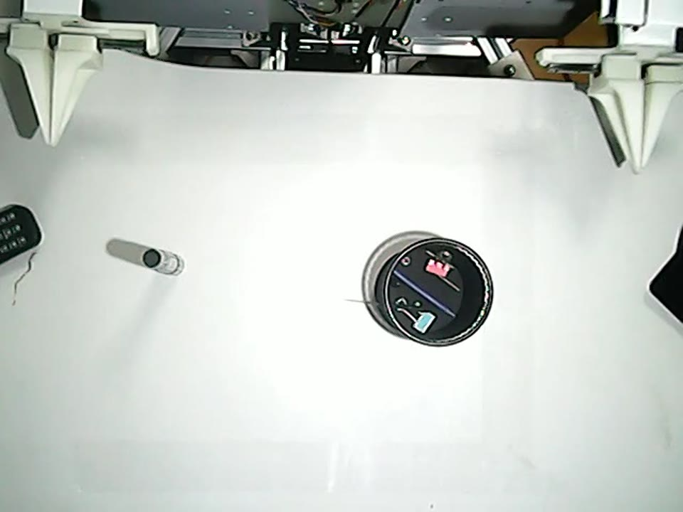
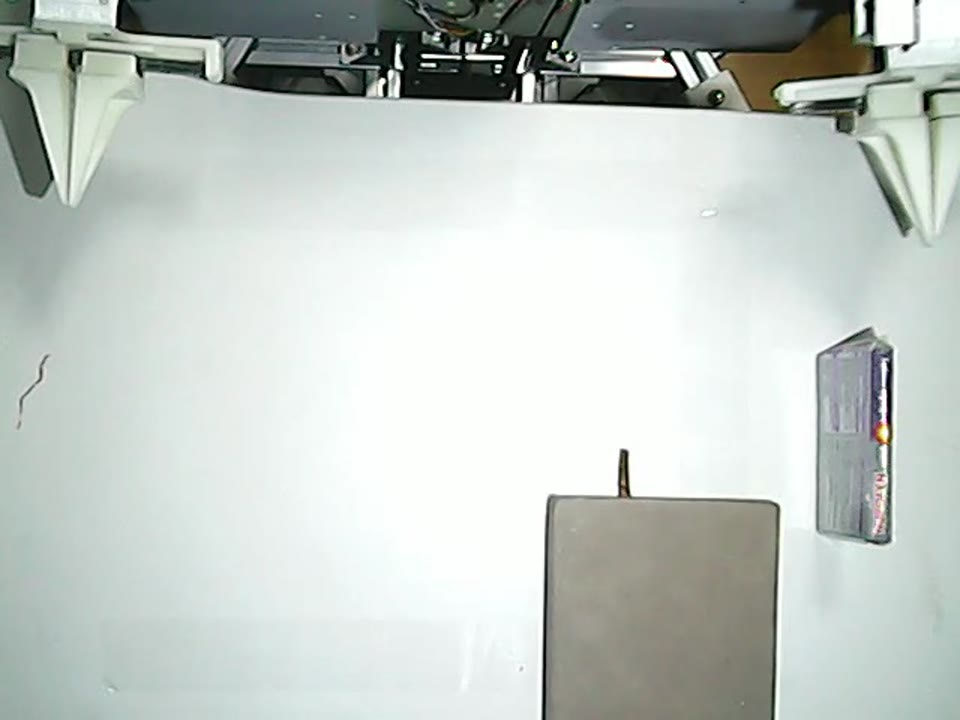
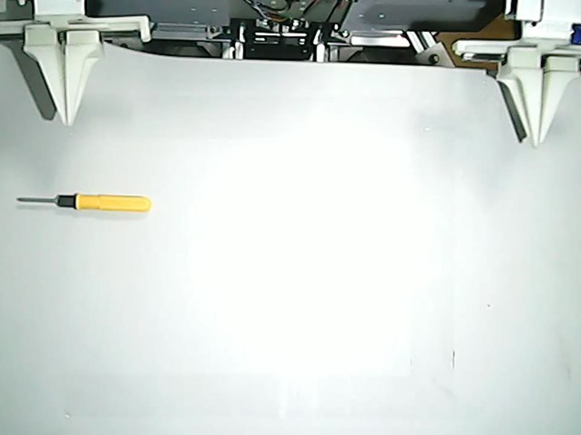
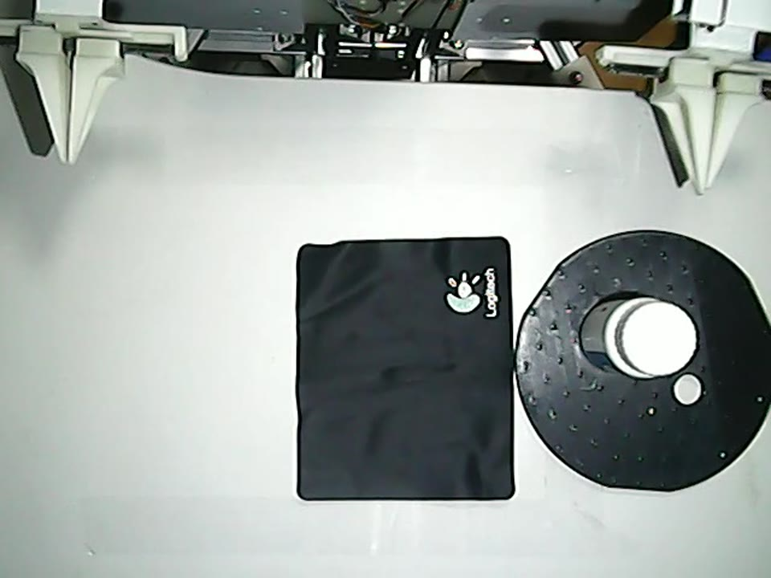
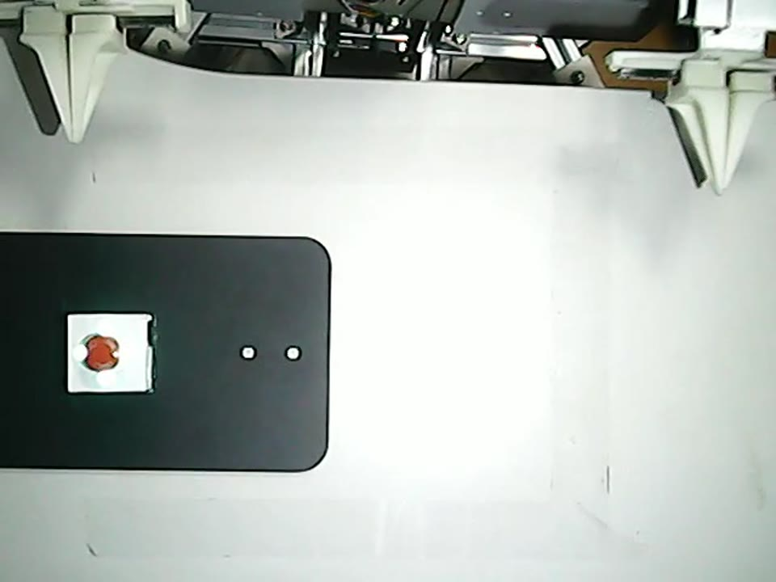

Physical benchmark
Reproduce DIYRobot
Build one internally consistent five-task dataset, retain the 14-D action contract through training and serving, and evaluate a fixed checkpoint under supervised, repeatable physical conditions.
Freeze the data contract
The active recorder writes LeRobot v2.1. Each frame contains follower state, the actual follower target sent by the controller, three images, and a natural-language task. Strict-teleop JSONL files are diagnostics and must not be used as training data.
| Field | Meaning | Shape / unit |
|---|---|---|
observation.state | Follower absolute joint positions | 14, degrees |
action | Follower absolute targets actually sent | 14, degrees |
observation.images.right_gripper | Right wrist/gripper RGB view | 640 x 480 |
observation.images.left_gripper | Left wrist/gripper RGB view | 640 x 480 |
observation.images.overhead | High/overhead RGB view | 640 x 480 |
task | Episode instruction | UTF-8 text |
The OpenPI configs map capture keys to policy keys:
cam_high <- observation.images.overhead
cam_left_wrist <- observation.images.left_gripper
cam_right_wrist <- observation.images.right_gripper- left_shoulder_pan
- left_shoulder_lift
- left_elbow_flex
- left_wrist_pitch
- left_wrist_flex
- left_wrist_roll
- left_gripper
- right_shoulder_pan
- right_shoulder_lift
- right_elbow_flex
- right_wrist_pitch
- right_wrist_flex
- right_wrist_roll
- right_gripper
Use the current prompt-v3 task semantics
The audited lower-host launcher currently defines these canonical prompts. Use the exact canonical prompt for the primary evaluation and record any paraphrase index separately.

Right-to-left pen handover and insertion
Place pill box at notebook center
Rotate screwdriver 90 degrees clockwise
Pull pill box onto adjacent black pad
Press green button once to change indicatorThe supplied paper table labels the fourth DIYRobot column “Pull Bottle,” while the current prompt-v3 launcher and poster asset describe pulling a pill box. Confirm the intended public benchmark name before publishing final results; do not silently treat the labels as interchangeable.
Collect a one-episode smoke dataset
Complete the hardware and calibration gates on the real-robot page first. Discover current device paths rather than copying the example paths from another machine.
cd /path/to/lerobot/src/lerobot/robots/hi_arm
ls -l /dev/serial/by-path
ls -l /dev/v4l/by-id
TASK="Put the pill box into the center of the notebook." \
REPO_ID="local/hiarm_smoke" \
ROOT="/data/hiarm_smoke" \
EPISODES=1 EPISODE_TIME=20 RESET_TIME=0 FPS=20 \
./start_hiarm_pi05_record.shThe launcher stops the three-camera preview process before recording so that the recorder can acquire all cameras. Verify that no unrelated process owns those devices before stopping anything manually.
Manual episode control
For supervised demonstrations with human-controlled start/stop, use the manual launcher. SPACE starts an episode and ENTER stops and saves it.
TASK="Put the pill box into the center of the notebook." \
TASK_MODE=same RESUME=1 \
REPO_ID="local/hiarm_five_tasks" \
ROOT="/data/hiarm_five_tasks" \
./start_hiarm_pi05_record_manual.shA rejected startup pose is a calibration or physical setup problem. Do not resolve it by widening thresholds until the cause is understood.
Inspect every dataset layer
A successful recorder exit is necessary but not sufficient. Verify metadata, parquet rows, images, prompt assignment, joint order, units, and episode outcomes.
meta/info.json
meta/tasks.jsonl
meta/episodes.jsonl
meta/episodes_stats.jsonl
data/chunk-000/episode_000000.parquet
videos/chunk-000/observation.images.right_gripper/episode_000000.mp4
videos/chunk-000/observation.images.left_gripper/episode_000000.mp4
videos/chunk-000/observation.images.overhead/episode_000000.mp4Episode, frame, task, feature, and video counts agree.
All three streams open, are synchronized, and show the intended views.
Both are finite 14-D vectors in the fixed order and degree convention.
Failed demonstrations are excluded from a success-only protocol.
Transfer the complete directory with meta/, data/, and videos/ unchanged. Record a dataset checksum or immutable snapshot identifier before label generation.
Generate labels and train a paper config
The unified registry retains the exact DIYRobot OpenPI configurations for PI0.5, PI0, FULL, LoRA, and AdaMoE runs. Select one config name from the same workspace.
cd /path/to/KinRT/policy/pi05
uv run python scripts/generate_router_labels.py \
--repo-root /data/lerobot/hiarm_five_tasks \
--output-dir /data/lerobot/hiarm_five_tasks/meta/router_labels_k4 \
--action-horizon 50 --feature-mode chunk_velocity \
--pca-components 64 --num-clusters 4 --seed 0
uv run python scripts/compute_norm_stats.py \
--config-name kinrt_lora_diyrobot
uv run python scripts/train.py kinrt_lora_diyrobot \
--exp-name diyrobot_kinrt_loraFor FULL, use kinrt_full_diyrobot. The retained paper configs use 8,000 steps, batch size 32, action horizon 50, four experts, Top-1 routing, and disabled EMA. The active label path and dataset identity must be replaced with local values.
Serve the checkpoint and validate the contract
Serve the exact checkpoint with the same config and normalization assets. The lower host remains the only process that owns cameras and motor buses.
cd /path/to/KinRT/policy/pi05
uv run python scripts/serve_policy.py policy:checkpoint \
--policy.config=kinrt_lora_diyrobot \
--policy.dir=/checkpoints/kinrt_lora_diyrobot/diyrobot_kinrt_lora/8000The policy request must carry a 14-D state, three images, and a prompt. The response must contain a 14-D action or an action chunk with final dimension 14. The current lower-host launcher maps the live camera names cam_high, cam_left_wrist, and cam_right_wrist to the server's images.* keys.
Evaluate with three gates
Gate A: software only
OFFLINE_SELF_TEST=1 ./start_hiarm_pi05_policy_client.shGate B: dry policy
POLICY_SERVER="<gpu-host>:<port>" TASK_ID=0 \
./start_hiarm_pi05_policy_client.shGate C: bounded motion
POLICY_SERVER="<gpu-host>:<port>" TASK_ID=0 \
ALLOW_MOTION=1 DURATION=30 \
./start_hiarm_pi05_policy_client.shAfter all five tasks pass bounded trials, run 50 trials per task with a fixed checkpoint, canonical prompt, reset protocol, object layout, success criterion, and failure log. Do not enable unbounded motion for benchmark collection.
Use only confirmed OpenPI paper configs
| Paper row | Release config | Parameterization |
|---|---|---|
| pi0.5-Full | pi05_full_diyrobot | Dense baseline |
| pi0.5-LoRA | pi05_lora_diyrobot | LoRA baseline |
| pi0-Full | pi0_full_diyrobot | Dense baseline |
| pi0-LoRA | pi0_lora_diyrobot | LoRA baseline |
| KinRT-Full | kinrt_full_diyrobot | KinRT, dense |
| KinRT-LoRA | kinrt_lora_diyrobot | KinRT, LoRA |
| KinRT-Full (pi0) | kinrt_full_pi0_diyrobot | KinRT, PI0 dense |
| KinRT-LoRA (pi0) | kinrt_lora_pi0_diyrobot | KinRT, PI0 LoRA |
| KinRT-AdaMoE | kinrt_adamoe_diyrobot | KinRT supervision on AdaMoE |
OpenVLA, RDT-1B, Hi-MoE, AdaMoE, and KinRT-OpenVLA use external frameworks. Their evidence is retained in the reference page; they are not valid OpenPI TrainConfig names.